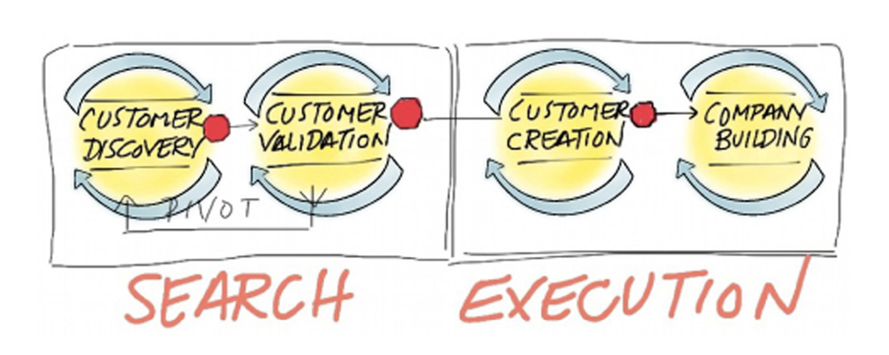

Customer Development
How to reduce customer and market risk? Learn to build strong customer relationships.

Customer Development was developed by Steve Blank and it is one of the best frameworks out there to lower customer and market risks.
Back in the old days, the way of thinking was to come up with the best idea, build a product and push it out to the market. This product-centric approach was very linear and risky.
Since the The Lean Startup book came out, a lot has changed. The way of thinking now is that several iterations will happen before we get the right product. Failing is a necessary part of the learning process.
By establishing a continuous communication line with customers, Product Managers can come up with hypothesis, try them out, and get feedback to adapt the product.
One of the most powerful tools in Customer Development is customer interviews. These interviews allow Product Managers to understand why customers use or not the product.
On this section
The Customer Development Model
The premise of this model is to learn and discover initial customers and markets. This is especially important for startups that need to iterate and test each element of their business model.
The Customer Development Model separates all the customer-related activities in four steps. The model assumes that it will take several iterations of these steps to get it right.
 From Steve Blank’s book. Resources section.
Most startups lack a process for discovering their markets, locating their first customers, validating their assumptions, and growing their business - Steve Blank
- Customer Discovery: A specific product solves a known problem for an identifiable group of users (also known as Product/Market Fit).
- Customer Validation: The market is scaleable and large enough for a viable business.
- Customer Creation: The business is scalable, creating and driving customer demand.
- Company Building: Company departments and operational processes are created to support scale.
This model is good for:
- Discovering and validating the right market for your idea.
- Building the right product that solve customers’ needs.
- Testing the correct model and tactics for acquiring and converting customers.
- Deploying the right organization and resources to scale the business.
This framework is all about testing business hypothesis and understanding customer needs first. A company doesn’t build its Sales, Marketing, Business Development teams until it has proof that it has a business worth building.
The Problem Hypothesis
The problem hypothesis is the starting point of Customer Development. Use the core business assumptions to create a problem hypothesis:
- Who are your users?
- What are their needs, goals and desires?
Once is ready, the next step is to conduct User Research to understand these needs, goals and desires.
Primary Research
User Research allows Product Managers to stop guessing about customer needs. They provide the data necessary to validate the business hypothesis. Talking to customers is key to build a successful product.
Primary research is the most important type of research. It can be either quantitative or qualitative. You must collect both from your customers to really understand their needs. There is no replacement for direct feedback from target customers.
Surveys
Surveys are especially good to measure attitudes, intent or task success. They help to quantify a particular customer problem, which makes easy to track changes over time.
Surveys are often misused. Before creating a survey, Product Managers need to know what answers are they looking for. It might not be the right tool. They are not good to understand customer behaviour since customers don’t find easy to answer open-ended questions in a form.
The characteristics of a good survey are:
- Short (less than 5 minutes).
- Specific.
- Questions grouped in clusters.
- Broad questions before specific.
- Quantitative.
Customer Interviews
Customer Interviews are the most flexible and accurate tool to understand customer problems and needs. They take a lot more time and effort but their value makes them worthy. Product Managers have the opportunity to hear customer problems and needs first hand and on their own words.
Good customer interviews should:
- Be open-ended and unbiased questions.
- Allow the user speak freely.
- Watch the body language.
- Tailor the conversation.
- Go deep with follow-up questions.
There are four types of interviews. A Product Manger may use all of them during the entire product lifecycle:
- Exploratory Interview: You are looking for pain points or problems. Trying to fish your customers.
- Validation Interview: You have a hypothesis and you want to test it out. Approve or disapprove.
- Satisfaction Interview: You want to know what customers think about your product. The good and bad.
- Efficiency Interview: You want to know what customers do with your product. The easy and the hard parts.
Finding Interviewees
Product Managers need to find a way to narrow the audience to get feedback from target customers. There is a process called screener that helps to decide if someone is a good candidate to get feedback from.
A good practice is to filter by demographics first. Then, find patterns on their responses during customer interviews. Anything from attitudes, aspirations and psychological profile is enough to build customer groups. This way of segmentation is called psychographics.
The more specific your are when approaching your audience, the better.
Running Interviews
A well prepared interview will get you closer to a successful interview. However, it is very easy to ruin an interview by making simple mistakes.
The first thing you need to do is to define the learning objective. This way you know what to look for during the interview.
At the beginning of the interview, build rapport and give a brief introduction on what they should expect. There are no right or wrong answers.
A good practice is to make use of the Intensity Arc technique. The idea is to begin with easy questions, continue with hard questions and end up with follow-up questions such as personal contact info.
A list of good practices for running interviews:
- Be friendly, engaging and casual.
- Take notes or record the session if possible.
- Stay positive and avoid bias.
- Listen to all user feedback without judgment.
- Pay attention to body language.
- Don’t intimidate nor go too fast.
- Listen actively by making eye-contact.
- Express gratitude for their time.
- Show encouragement when they are having hard time answering.
- Don’t ask leading or hypothetical questions.
- Always seek clarity by asking for more information.
- Avoid conclusions before the interview ends.
Analyzing Data
After user research is done, its time to get insights from the raw data.
When checking customer responses, you will start to find patterns. They might use different wording but they talk about the same core problems. Some of them might be looking for potential solutions. Others might be unhappy with current solutions.
The Product Manager’s job is to put the facts to work and improve the product.
User Personas
A User Persona is a tool for describing the target customer. They make more convenient to talk about certain behaviors. It also increases empathy with your users.
A precise definition of our user and what he wishes to accomplish - Alan Cooper
User Personas help everyone involved with the product to have a common understanding. Every small product decision on the team needs to be aligned.
The steps for creating a User Persona are:
- Observe a large number of users and find a frequent user behavior.
- Pretend that it is one fictional user doing that thing and name that fictional user with a real name.
- Give them a description like how they like to use your product and what matters to them.
- Give them a bit of background information.
Elements of User Personas
User Personas should fit in a single page. They need to clearly communicate the target customer. Don’t overthink it.
Include the following information:
- Name
- Photograph
- Quote about what they care most about
- Job title
- Demographics
- Needs/goals
- Motivations and attitudes
- Tasks and behaviors
- Frustrations/pain points with current solution
- Level of expertise in the relevant domain
- Product usage context/environment
- Technology adoption life cycle segment
- Any other relevant attribute
This is a first draft of the most important tools within Customer Development. Take the time to learn from the resources below. We keep them up to date!
Do you have any feedback? Please, let us know here.